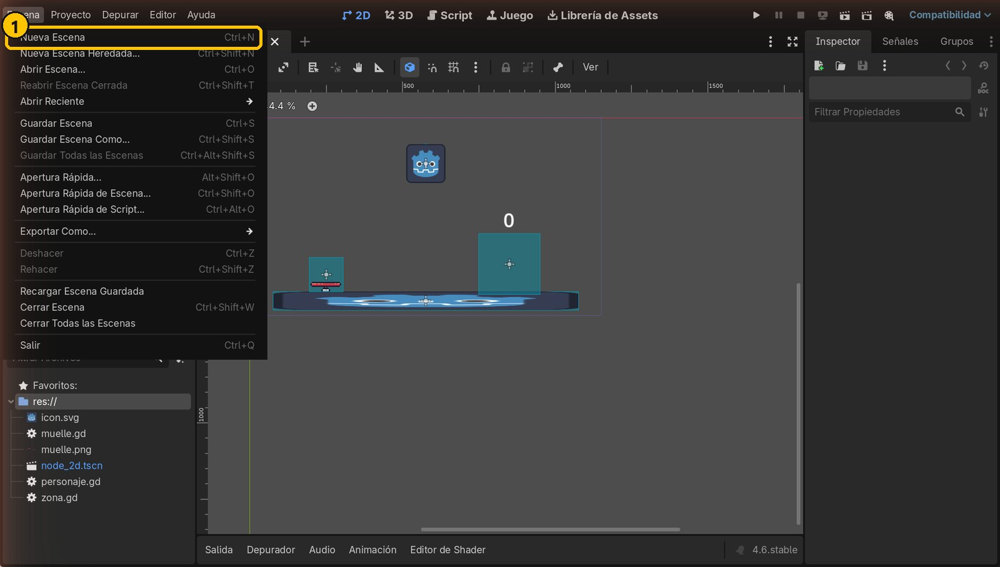
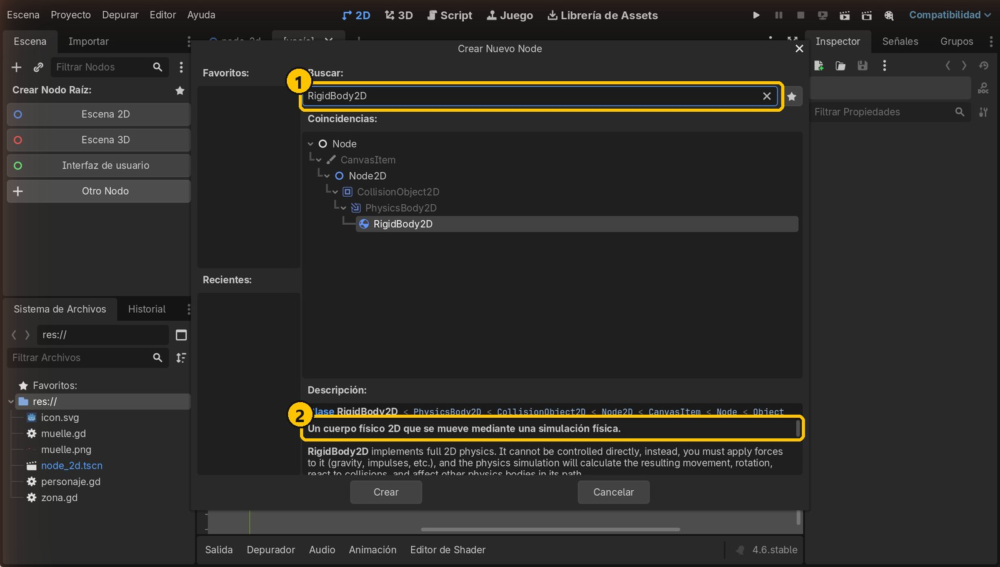
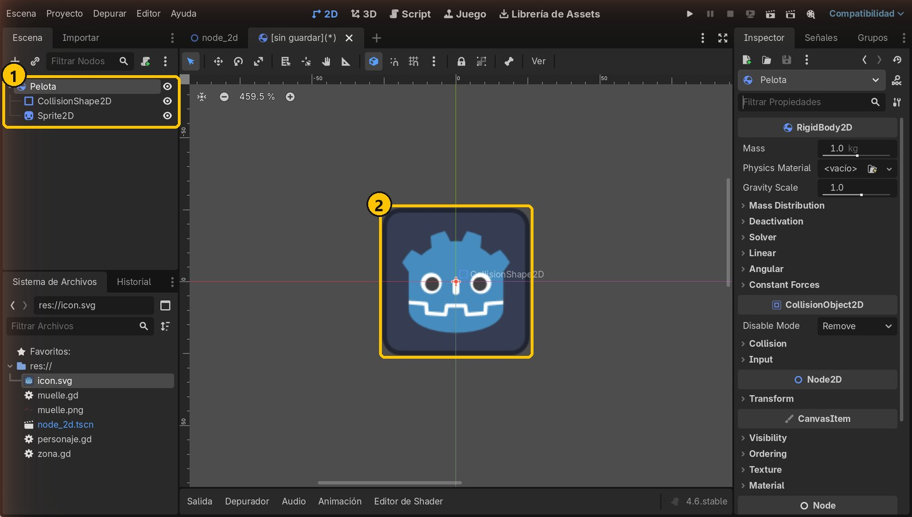
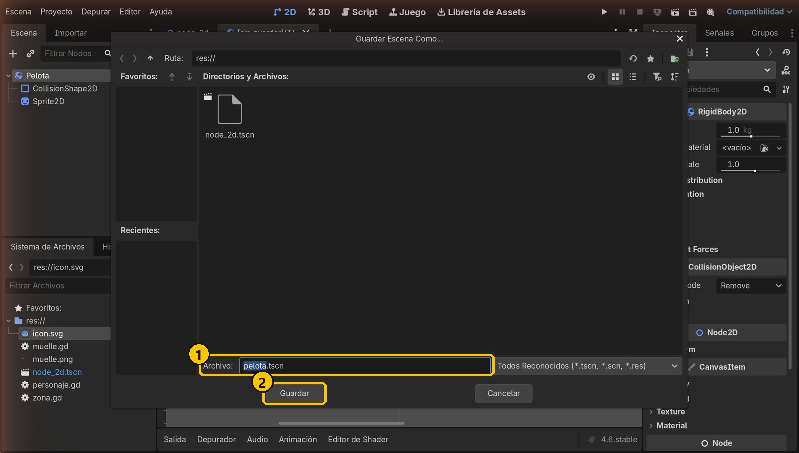
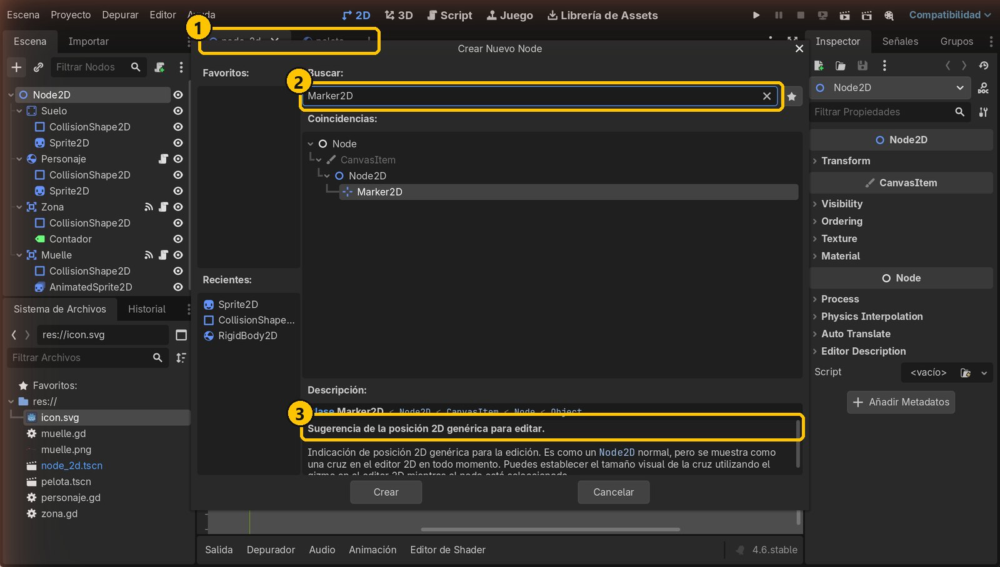
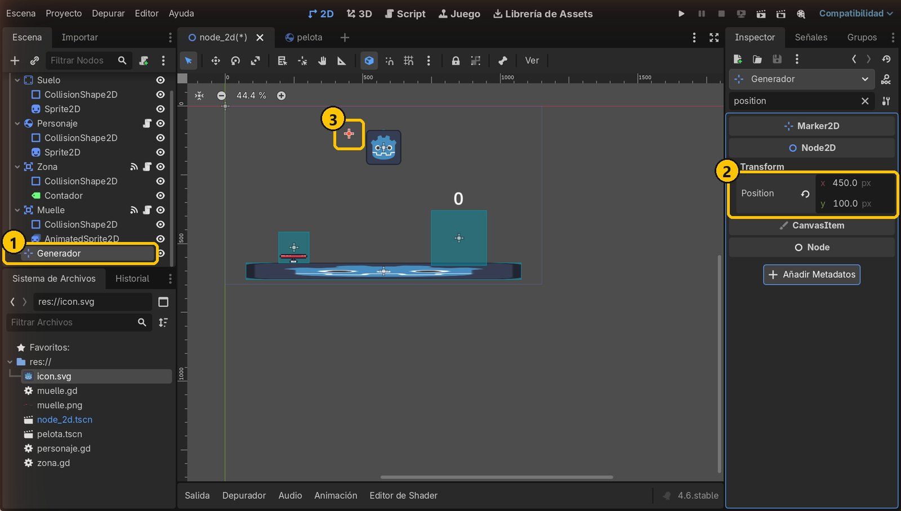
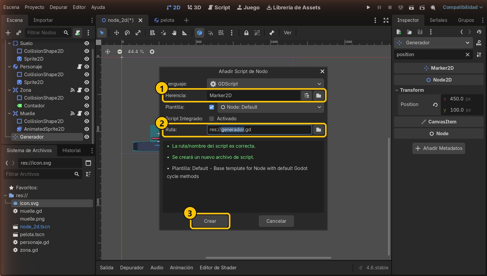
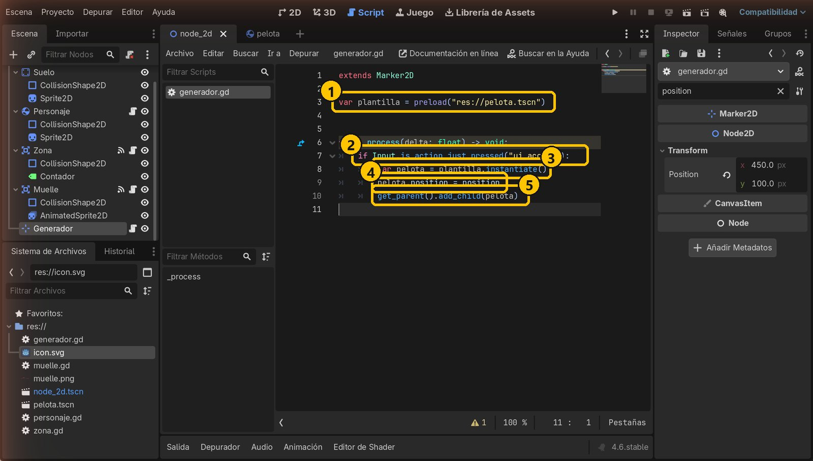
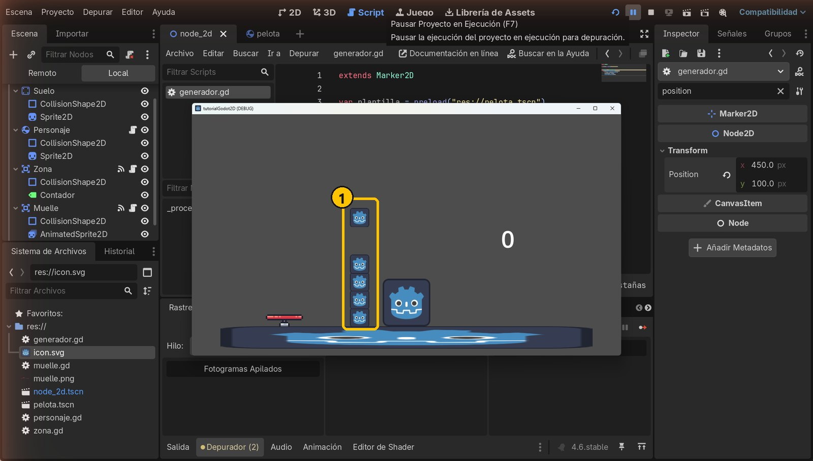

Objetivo
Al terminar tendrás una escena pelota.tscn y un Generador (Marker2D) que crea una pelota nueva cada vez que pulsas Espacio.
Partimos de: El proyecto del tutorial 4: Suelo, Personaje, Zona con contador y Muelle.
Nodos que usamos
Escena como plantillaUn .tscn guardado es un molde: se pueden sacar todas las copias que quieras.
preload("res://...")Carga la escena una sola vez, al empezar el juego.
instantiate()Crea una copia nueva de la escena cargada.
add_child(nodo)Mete el nodo en la escena para que aparezca y funcione. Sin esto, la copia existe pero no se ve.
Marker2DNodo que solo marca una posición. En el editor es una cruz; al jugar no se ve.
Paso a paso
1Crea una escena nueva
En el menú Escena, elige Nueva Escena. Se abre una pestaña vacía.

- 1Nueva Escena
2Raíz: un RigidBody2D
En Crear Nodo Raíz pulsa Otro Nodo, busca RigidBody2D y pulsa Crear. Renómbralo a Pelota (F2).

- 1Busca RigidBody2D
- 2Se mueve con la física
3Forma y dibujo
Añade a Pelota un CollisionShape2D con un CircleShape2D de Radius 24. Añade también un Sprite2D: arrastra icon.svg a su Texture y pon Scale 0.4 y 0.4.

- 1Pelota, forma y dibujo
- 2La pelota
4Guárdala: es la plantilla
Pulsa Ctrl+S y guárdala como pelota.tscn. Esta escena es el molde del que saldrán todas las pelotas.

- 1pelota.tscn
- 2Guardar
5Añade un Marker2D
Vuelve a la pestaña node_2d. Selecciona Node2D y añade un hijo Marker2D.

- 1Vuelve a node_2d
- 2Busca Marker2D
- 3Solo una posición
6Llámalo Generador y colócalo
Renómbralo a Generador y pon Position x = 450, y = 100: arriba, desde donde caerán las pelotas.

- 1Generador
- 2Position: 450, 100
- 3La cruz del Marker2D
7Añade un script al Generador
Con Generador seleccionado, pulsa el botón de añadir script. Hereda de Marker2D y se guarda como res://generador.gd. Pulsa Crear.

- 1Hereda de Marker2D
- 2generador.gd
- 3Crear
8Escribe el código
Sustituye el script por este código y guarda. preload carga la escena una vez. Al pulsar ui_accept (barra espaciadora o Intro), instantiate() hace una copia, le damos la posición del Generador y add_child la mete en la escena.
extends Marker2D
var plantilla = preload("res://pelota.tscn")
func _process(delta: float) -> void:
if Input.is_action_just_pressed("ui_accept"):
var pelota = plantilla.instantiate()
pelota.position = position
get_parent().add_child(pelota)
- 1Carga el molde
- 2Al pulsar Espacio
- 3Copia nueva
- 4Donde el Generador
- 5La mete en el juego
9Ejecuta y pulsa Espacio
Ejecuta con F5 y pulsa Espacio varias veces: cada pulsación crea una pelota nueva que cae desde el Generador.

- 1Una pelota por pulsación
Resumen
- Una escena guardada (
.tscn) es una plantilla. preloadla carga einstantiate()crea copias.add_childmete cada copia en el juego.
Si algo falla
- Pulso Espacio y no pasa nada. ¿Falta
add_child? Sin él la pelota no entra en la escena. Comprueba también que el script está en el Generador. - Error al cargar «res://pelota.tscn». La ruta de
preloaddebe coincidir exactamente con el nombre del archivo (mira el Sistema de Archivos). - Las pelotas aparecen en la esquina de arriba a la izquierda. Falta
pelota.position = position. - La pelota no cae. La raíz de pelota.tscn debe ser un
RigidBody2D, no un Node2D.
Prueba tú
- Dale a cada pelota un impulso al nacer:
pelota.apply_central_impulse(Vector2.RIGHT * 300). - Mueve el Generador encima de la Zona: ¿qué pasa con el contador?
- Cambia la tecla por otra acción, por ejemplo
ui_down.